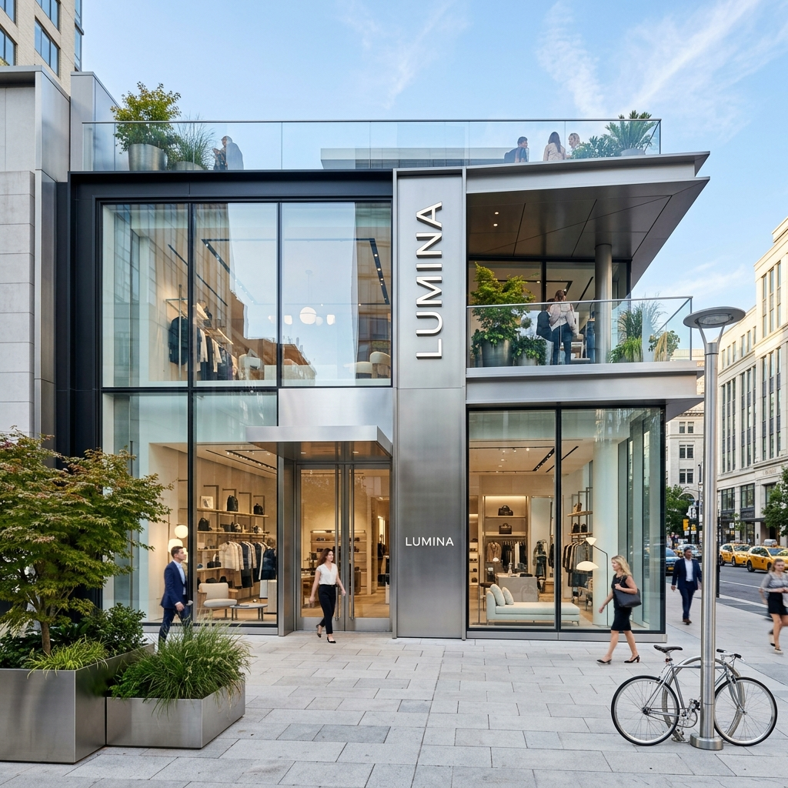
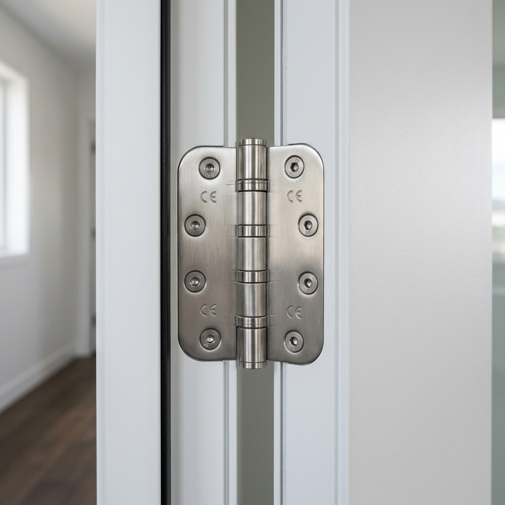
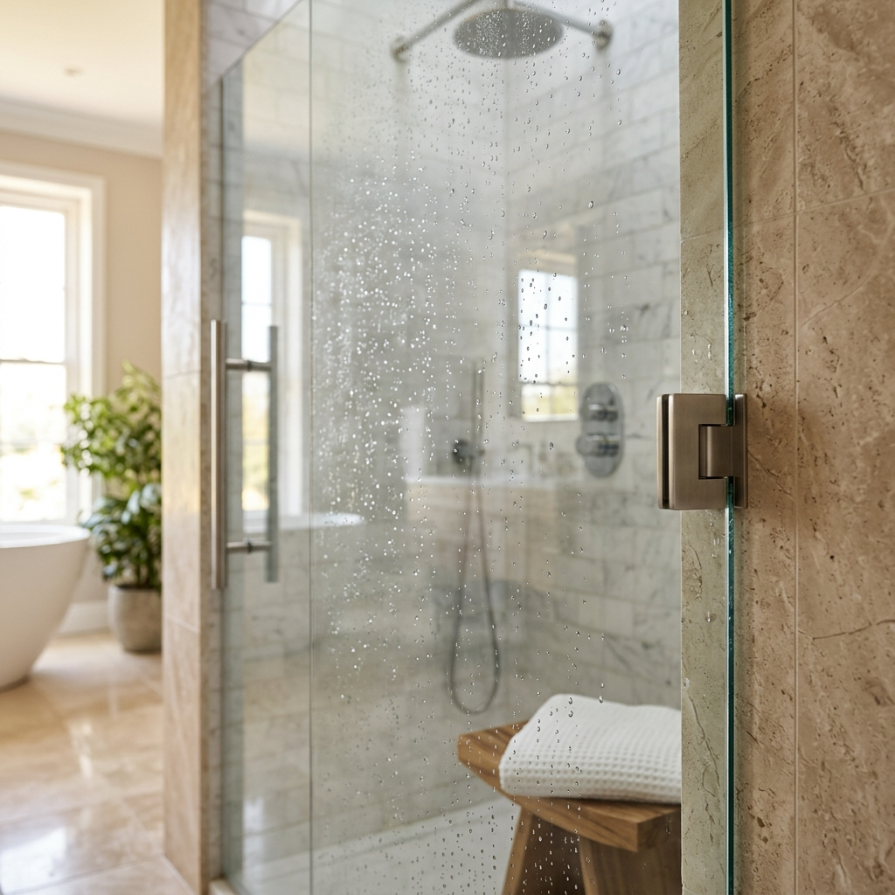
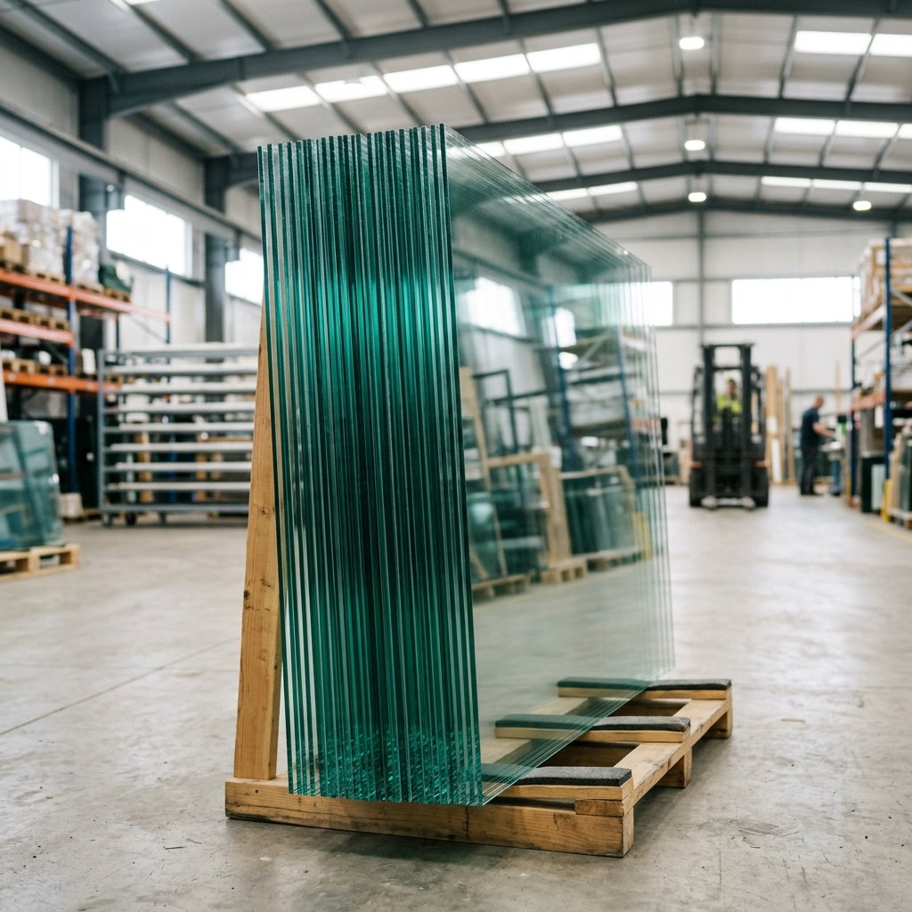

Panduan
Lebih dari 27 tahun melayani kebutuhan material di Depok. Chelatamabojongsari pilihan utama di Bojongsari.

Tips
Tidak semua profil aluminium sama. Ketahui cara membedakan kualitas aluminium rumah Anda.

Tren
Curtain wall terus berkembang. Simak tren desain fasad kaca yang sedang populer tahun ini.
Perawatan
Jendela aluminium memang tahan lama, tapi perawatan tepat bisa memperpanjang usianya.

Inspirasi
Pintu sliding memberikan kesan luas dan modern. Pelajari keunggulan pemasangannya.
Edukasi
Kedua finishing ini populer untuk aluminium. Kenali perbedaan untuk proyek Anda.
Tren
Mengenal teknologi kaca yang bisa berubah buram secara otomatis.
Baca Selengkapnya